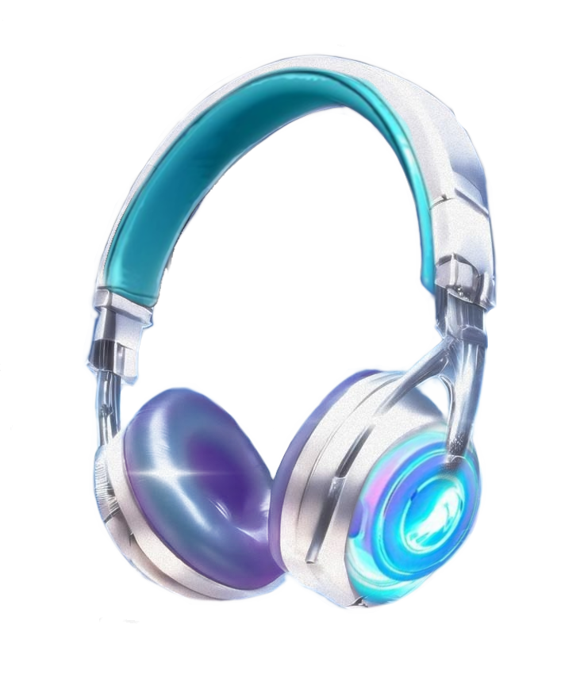

01 / SONIDO
Tu música, en primer plano.
Sumérgete en tus canciones con graves profundos y un sonido envolvente, ideal para acompañarte mientras estudias, juegas o descansas.
SONIDO DEL FUTURO · ALMA RETRO

01 / CONECTA CON LO QUE SIENTES
02 / TU PROPIO UNIVERSO
Graves envolventes, almohadillas suaves y un acabado que brilla contigo. De tu playlist favorita a tus noches de juego: haz que cada momento suene a ti.
Explora AuriWave ↓MÁS QUE UN ACCESORIO
01 / SONIDO
Sumérgete en tus canciones con graves profundos y un sonido envolvente, ideal para acompañarte mientras estudias, juegas o descansas.
02 / COMODIDAD
Su diadema ajustable y sus almohadillas acolchadas se adaptan a ti para que disfrutes cada sesión con comodidad.
03 / DISEÑO
Celeste eléctrico, detalles plateados y una silueta retrofuturista inspirada en los mundos vaporwave y synthwave.